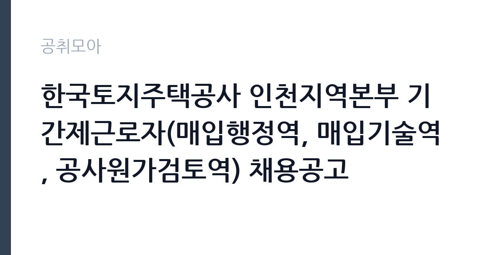

[공공기관] 한국토지주택공사 인천지역본부 기간제근로자(매입행정역, 매입기술역, 공사원가검토역) 채용공고
한국토지주택공사 · 인천 · 마감 2026-11-09 (D-15) · 출처 잡알리오

한눈에 보는 모집 조건
| 기관 | 한국토지주택공사 |
|---|---|
| 공고명 | 한국토지주택공사 인천지역본부 기간제근로자(매입행정역, 매입기술역, 공사원가검토역) 채용공고 |
| 고용형태 | 기간제 |
| 근무지 | 인천 |
| 게시일 | 2026-10-26 |
| 마감일 | 2026-11-09 (D-15) |
지원자격, 이렇게 읽으세요
- 공공기관 채용공시
- 세부 조건은 원문 공고문 확인
공통 요건이 꽤 구체적입니다. 본인이나 배우자, 생계를 같이하는 직계존비속이 인천지역본부 관할 지역에서 주택 매도신청을 한 이력이 없어야 하고, 본인이 주택매입 심의위원을 맡은 적도 없어야 합니다. 과거 신청 이력까지 확인하므로 해당된다면 지원 자체가 어렵습니다. LH와 대한주택공사, 한국토지공사의 임직원 근무 이력도 없어야 하며, 만 18세 이상이어야 합니다. 분야별 요건은 더 좁습니다. 매입행정역은 운전면허 2종 보통 이상을 갖추고 공인중개사, 주택관리사, 또는 공인중개사사무소·감정평가법인·법무사사무소·법률사무소에서 5년 이상 실무 경력이 있어야 합니다. 매입기술역은 해당 분야 기사 이상 자격과 설계·시공·감리·CM 실무경력 5년 이상을 모두 충족해야 하고, 공사원가검토역은 기사 이상 자격에 건설기술인 경력증명서상 중급기술인 이상이어야 합니다.
이 공고의 포인트
이 공고를 볼 때 가장 먼저 봐야 할 숫자는 11명이라는 규모와 5년이라는 경력 문턱입니다. 세 분야 모두 신입이 지원할 수 있는 자리가 아니고 실무 경력자만 통과합니다. 그만큼 지원자 수가 제한되어 경쟁률이 낮게 형성되는 편입니다. 두 번째 특징은 인천지역본부의 업무 특성입니다. 인천은 신축 매입임대 사업과 전세사기 피해 지원 업무가 겹쳐 있어 매입 관련 인력 수요가 꾸준합니다. 세 번째는 평가 기준이 공개되어 있다는 점입니다. 서류는 자기소개 30점, 지원동기 30점, 경험 및 경력 40점에 가점 20점이 붙고, 면접은 의사소통 30점, 문제해결 40점, 조직적응력 30점입니다. 면접 배점에서 문제해결이 가장 높다는 사실은 준비 방향을 정해줍니다.
전형은 어떻게 진행되나
1차 서류전형은 자격 요건 충족자를 대상으로 서류심사 합계 고득점자 순으로 채용인원의 2배수를 선발합니다. 선정자 발표와 면접 안내는 11월 16일 오후 5시 이후 개별 문자로 통보되며, 당일 오후 5시 30분까지 문자가 오지 않으면 인천지역본부 채용 담당자에게 유선 확인해야 합니다. 2차 면접전형은 서류 합격자를 대상으로 의사소통 30점, 문제해결 40점, 조직적응력 30점을 평가하고 특별우대 가점 10점이 더해집니다. 면접 점수 70점 미만은 과락으로 불합격 처리되므로 평균 이상을 확보해야 합니다. 예비합격자는 모집분야별 3명을 순위를 확정해 선발하고, 최종합격자는 11월 25일 오후 5시 이후 개별 통보됩니다.
원문에서 확인한 전형 방식
[공통] 1. 한국토지주택공사 「인사규정」제9조(채용금지) 및 「기간제근로자 운영지침」제15조(채용금지)에 해당되지 아니한 자 2. 본인, 배우자, 생계를 같이하는 본인의 직계존비속, 생계를 같이하는 배우자의 직계존비속이 지역본부 관할지역 내 매도신청 등을 하지 아니한자( ※ 과거 신청이력도 없어야 함) 및 본인이 주택매입 심의위원 등을 하지 아니한 자 3. 공고일 기준 한국토지주택공사 「직제규정」 제3조, 제4조, 제5조에 따른 임직원으로 근무한 이력이 없는 자 (대한주택공사 및 한국토지공사의 근무 이력도 없어야 채용 가능) 4. 남자의 경우 병역을 필하였거나 면제된 자 5. 공고일 현재 만 18세 이상인 자 [매입행정역] 공고일 기준 운전면허(2종 보통 이상) 자격증 소지한 자로서, 아래 제1호 내지 제3호 자격요건 중 하나를 충족하는 자 1. 공인중개사 2. 주택관리사 3. 공인중개사사무소, 감정평가법인(사무소), 법무사사무소, 법률사무소·법무법인에서 실무 경력 5년 이상 종사한 자 [매입기술역] 공고일 기준 운전면허(2종 보통 이상) 자격증 소지자로서, 아래 제1호 및 제2호를 모두 충족하는 자 1. 해당분야 기사
이런 분께 추천해요
- 공인중개사나 주택관리사 자격으로 주택 매입 실무를 해보려는 분
- 건설·전기·정보통신·소방 분야 기사 이상 자격과 5년 이상 실무 경력을 갖춘 분
- 원가검토나 적정가격 산정 경험이 있는 건설기술인
지원 전 체크리스트
- 본인과 가족의 인천지역 매도신청 이력이 없는지 확인했는가
- LH·대한주택공사·한국토지공사 근무 이력이 없는지 확인했는가
- 건설기술인 경력증명서를 발급받아 등급(중급/고급)을 확인했는가
- 운전면허 2종 보통 이상 소지 여부를 확인했는가
모집 일정과 제출 타이밍
공고는 10월 26일 등록되었고 접수 마감은 11월 9일입니다. 서류 발표 11월 16일, 면접은 그 직후, 최종 발표 11월 25일로 일정이 촘촘하게 이어집니다. 건설기술인 경력증명서는 한국건설기술인협회에서 발급하며 처리에 며칠이 걸리므로 접수 첫 주에 신청해야 합니다. 경력증명서상 등급이 요건에 못 미치면 서류에서 바로 탈락하므로, 발급 전에 본인의 등급을 먼저 확인하는 편이 안전합니다. 면접 준비는 서류 제출과 동시에 시작하십시오. 서류 발표와 면접 사이 간격이 길지 않습니다.
직무 이해하기: 공공기관
매입행정역은 LH가 민간 주택을 사들이는 과정의 실무를 맡습니다. 매도 신청이 들어온 주택의 권리관계를 확인하고, 등기부등본과 건축물대장을 대조하며, 계약서 작성과 지급 절차를 진행합니다. 현장을 직접 방문해 주택 상태를 확인하는 일도 많아 운전면허가 필수 요건으로 들어 있습니다. 매입기술역은 설계도서와 시공 상태를 검토하고 품질 점검 결과를 정리합니다. 공사원가검토역은 예정가격 산정과 원가 분석, 계약 관련 검토를 담당합니다. 세 분야 모두 문서 검토 비중이 높고, 매도인과 이해관계인을 상대하는 응대 업무가 함께 따릅니다.
자기소개서 작성 팁
서류 배점이 자기소개 30점, 지원동기 30점, 경험 및 경력 40점으로 경험 비중이 가장 높습니다. 자기소개는 성격과 업무 스타일을 짧게 정리하고, 지원동기는 인천지역본부의 매입 사업이 왜 필요한지와 본인의 경력을 연결하십시오. 가장 공을 들일 부분은 경험 및 경력입니다. 담당했던 업무의 종류, 처리 건수, 다뤘던 금액 규모, 협업한 상대를 구체적으로 적으십시오. 예를 들어 중개사무소에서 권리분석을 몇 년간 수행하며 어떤 유형의 하자가 있는 물건을 걸러냈는지 서술하면 설득력이 커집니다.
면접 준비 포인트
면접 배점은 문제해결 40점, 의사소통 30점, 조직적응력 30점입니다. 문제해결 비중이 가장 크므로 상황형 질문에 대비해야 합니다. 권리관계가 복잡한 주택의 매입 요청이 들어왔을 때 어떤 순서로 확인할지, 매도인이 가격을 계속 올릴 때 어떻게 대응할지, 현장 상태가 서류와 다를 때 어떻게 처리할지 같은 질문이 나옵니다. 의사소통 항목은 이해관계인과 갈등 없이 설명하는 능력을 봅니다. 조직적응력은 지역본부와 본사, 외부 기관 사이의 보고 체계를 이해하는지 확인하는 질문으로 이어집니다.
급여·근무조건 읽는 법
기간제근로자의 보수는 LH 기간제근로자 운영지침에 따라 기본급과 직무수당, 정기상여금을 합산한 월 지급액으로 공고문에 표시됩니다. 이번 공고는 본문에 금액을 싣지 않고 첨부 공고문의 보수표로 안내하고 있으므로 분야별 월 지급액은 원문에서 확인해야 하며, 확인되지 않은 금액은 추정하지 않는 것이 원칙입니다. 참고로 2026년 8월에 낸 같은 본부 계열 공고에서는 대체채용 사업관리 직무가 월 253만 8,840원, 법무관리 직무가 월 351만 4,310원으로 기본급과 직무수당 10만원, 정기상여금으로 나뉘어 제시된 사례가 있습니다. 이번 공고의 매입 분야는 자격과 경력 수준이 높아 그보다 높게 책정될 가능성이 있지만 단정할 수 없으니 원문 보수표를 기준으로 판단하십시오. 기간제법상 정규직 전환 대상이 아니라는 점도 함께 확인해야 합니다.
자주 묻는 질문
- 매입행정역은 공인중개사 자격이 꼭 필요한가요?
공인중개사, 주택관리사, 또는 관련 기관에서 5년 이상 실무 경력 가운데 하나를 충족하면 됩니다. 자격이 없어도 경력으로 지원할 수 있습니다. - 가족이 인천에서 주택을 매도한 적이 있으면 지원할 수 없나요?
본인과 배우자, 생계를 같이하는 직계존비속의 매도신청 이력이 없어야 하며 과거 이력까지 확인합니다. 해당된다면 지원이 제한됩니다. - 면접에서 70점 미만이면 어떻게 되나요?
면접 점수 70점 미만은 과락으로 불합격 처리됩니다. 배점이 문제해결 40점으로 가장 높으므로 상황형 질문 대비가 중요합니다.
함께 보면 좋은 공고
[공공기관] 2026년도 10월 블라인드 공개채용 계약직 (보건직, 행정직, 원무직) 모집 공고 — 마감 2026-11-09[공공기관] 2026년도 10월 블라인드 공개채용 국비계약직(작업치료사) 모집 공고 — 마감 2026-11-09[공공기관] 2026년도 제5차 신규직원(정규직) 채용 — 마감 2026-11-10출처: 잡알리오 공개정보를 바탕으로 공취모아가 정리한 안내글입니다. 모집 조건·일정은 변경될 수 있으니 지원 전 반드시 원문 공고문을 확인하세요. 본 글은 정보 제공용이며 합격을 보장하지 않습니다.